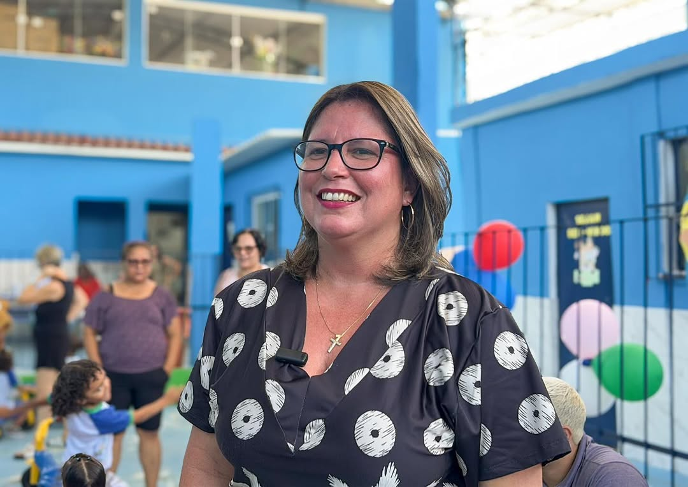
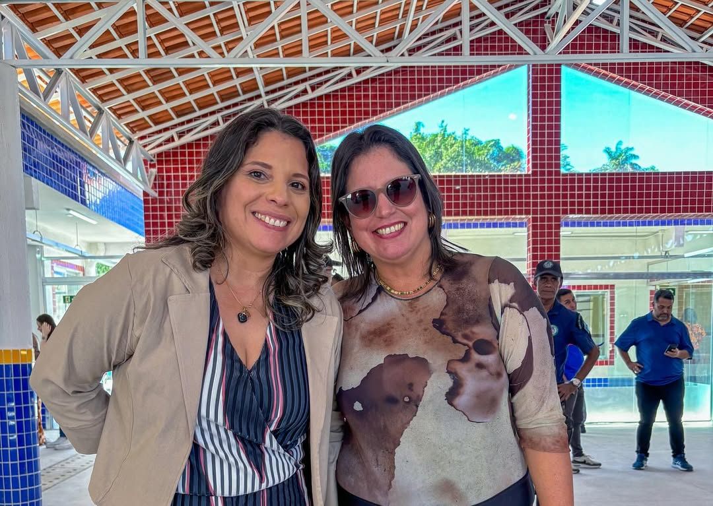

Caroline Ontiveros
Candidata a Deputada Estadual
Conheça minha história e nossas propostas — embarque conosco nessa jornada por um Rio mais justo e educador!

✨ Quem é Caroline Ontiveros
Caroline Machado Ontiveros Céspedes é uma mulher fluminense, educadora e gestora pública, que dedicou sua trajetória à melhoria da educação e das políticas sociais no Estado do Rio de Janeiro.
À frente da Secretaria Municipal de Educação de Japeri, Caroline promoveu uma verdadeira transformação: modernizou escolas, valorizou os profissionais da educação e defendeu uma escola pública mais inclusiva, acolhedora e eficiente.
Seu trabalho é pautado no diálogo, na transparência e no compromisso com resultados reais para alunos, professores e famílias. Caroline acredita que a educação é a base para um futuro melhor — e que nenhuma transformação é possível sem o protagonismo das mulheres e da juventude.
Agora, amplia seu compromisso com o povo fluminense, colocando sua experiência, sensibilidade e coragem a serviço de uma nova política: moderna, humana e transformadora.
📘 NOSSAS PRINCIPAIS PROPOSTAS
Compromissos reais com a Educação, a Igualdade e o Desenvolvimento Social:
Caroline acredita que o futuro do Rio começa dentro da sala de aula, com respeito, estrutura e oportunidades iguais para todos.
📸 Nossa Caminhada


{kind=link}
{kind=link}
📬 Fale com a gente
Envie sua mensagem, proposta ou dúvida. Juntos podemos construir um novo tempo para o Rio de Janeiro!
© 2025 Caroline Ontiveros. Todos os direitos reservados. Design: HTML5 UP.